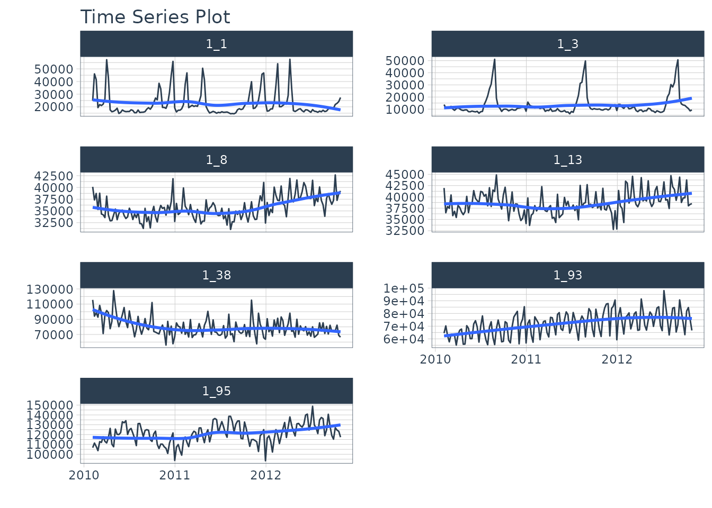
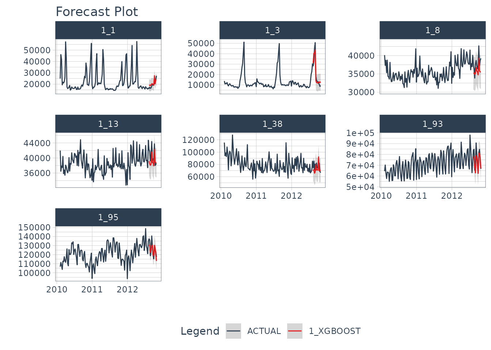
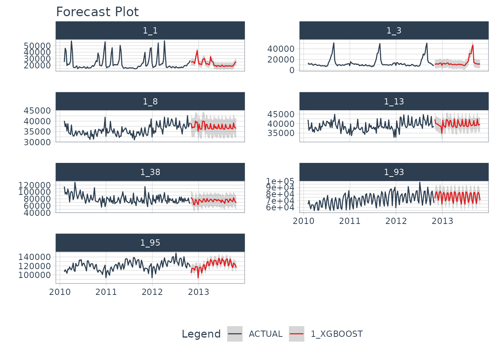

Why is global modeling important for time series? For starters, the ability to forecast many time series with a single model that is trained on many time series groups was a winning strategy in recent Kaggle M5 Forecasting Competition. In fact, it’s the solution we recommend in our Time Series Course when forecasting many time series as part of a high-performance forecasting system. Why? Because it speeds up forecasting, allowing the data scientist to more rapidly experiment and find good solutions.
Global Forecasting
In general, there are two methods for forecasting at scale (a slow and accurate method and a fast and good method):
Iterative Forecasting (Slow and Accurate): Best for accuracy but takes much longer than global model (due to for-loop iteration), results in many models (more memory required), and is often needed to be run in parallel to scale to thousands of time series (otherwise it can take days to complete). But, iterative forecasting can yield great results. See Nested Forecasting for our Iterative Forecasting implementation.
Global Modeling (Fast and Good): Best for scalability to thousands of time series. Uses a Panel Data structure. Can scale to 10,000+ time series easily because only a single model is made that generates predictions (forecasts) for all of the time series. Requires feature engineering and parameter tuning to get best performance, which can be challenging for beginners.
Important Concepts
Students can struggle with global modeling. To help, I have a few terms to cover that will help you understand how global modeling works (and how it differs from iterative modeling).
Panel Data
The panel data structure is the format used for global modeling. In it’s simplest form, Panel Data is a time series dataset that has more than one series. Each time series is stacked row-wise (on-top) of each other.

Panel Data Structure
Traditional Modeling (Iteration)
Traditional modeling techniques like ARIMA can only be used on one time series at a time. The widely accepted forecasting approach is to iterate through each time series producing a unique model and forecast for each time series identifier. The downside with this approach is that it’s expensive when you have many time series. Think of the number of products in a database. As the number of time series approaches the range of 1000-10,000, the iterative approach becomes unscalable.

Problem: 1000 ARIMA Models Needed for 1000 Time Series
Global Modeling
Global Models are alternatives to the iterative approach. A Global Model is a single model that forecasts all time series at once. Global Models are highly scalable, which solves the problem of 1-10,000 time series. An example is an XGBoost Model, which can determine relationships for all 1000 time series panels with a single model.

Solution: A Single XGBOOST Model can Model 1000 Time Series
Importance of Feature Engineering
The downside is that an global approach can be less accurate. To improve accuracy, feature engineering and localized model selection by time series identifier become critical to large-scale forecasting success. We recommend learning feature engineering techniques that are proven to get results in our Time Series Forecasting Course.
Modeling Panel Data
Getting Started
We’ll cover a short tutorial on global forecasting. The first thing to do is to load the following libraries:
Dataset
Next, let’s use the walmart_sales_weekly dataset that
comes with timetk.
data_tbl <- walmart_sales_weekly %>%
select(id, date = Date, value = Weekly_Sales)
data_tbl
#> # A tibble: 1,001 × 3
#> id date value
#> <fct> <date> <dbl>
#> 1 1_1 2010-02-05 24924.
#> 2 1_1 2010-02-12 46039.
#> 3 1_1 2010-02-19 41596.
#> 4 1_1 2010-02-26 19404.
#> 5 1_1 2010-03-05 21828.
#> 6 1_1 2010-03-12 21043.
#> 7 1_1 2010-03-19 22137.
#> 8 1_1 2010-03-26 26229.
#> 9 1_1 2010-04-02 57258.
#> 10 1_1 2010-04-09 42961.
#> # ℹ 991 more rowsThe dataset is that is already set up for panel data modeling. The important columns are:
“id”: This separates the time series groups (in this case these represent sales from departments in a walmart store)
“date”: This is the weekly sales period
“value”: This is the value for sales during the week and store/department
We can visualize this by time series group to expose the differences in sales by department.
data_tbl %>%
group_by(id) %>%
plot_time_series(
date, value, .interactive = F, .facet_ncol = 2
)
We can clearly see that there are 7 time series groups with different weekly sales patterns.
Train/Test Splitting
We can split the data into training and testing sets using
time_series_split(). We’ll investigate the last 3-months of
the year to test a global model on a 3-month forecast. The message on
overlapping dates is to let us know that multiple time series are being
processed using the last 3-month window for testing.
splits <- data_tbl %>%
time_series_split(
assess = "3 months",
cumulative = TRUE
)
#> Using date_var: date
#> Data is not ordered by the 'date_var'. Resamples will be arranged by `date`.
#> Overlapping Timestamps Detected. Processing overlapping time series together using sliding windows.
splits
#> <Analysis/Assess/Total>
#> <917/84/1001>Recipe
Next, we need to preprocess the data. This is where
we add good features to imporve our global model performance. We will
use the recipes workflow for generating time series
features.
step_mutate_at(): Applies a function to one or more columns. Used to remove extra unused levels in our categorical ID column.step_timeseries_signature(): Used to add calendar features based on our date columnstep_rm(): Used to remove the date column. Machine Learning algorithms like XGBoost don’t handle date columns very well.step_zv(): Used to remove any zero variance features. Features with no variance don’t add useful information to our model.step_dummy(): Used to convert categorical features to binary one-hot encoded features that algorithms like XGBoost can model more effectively.
This results in 37 derived features for modeling. We can certainly include more features such as lags and rolling features that are known to improve results. These concepts and more are covered in the High-Performance Time Series Course.
rec_obj <- recipe(value ~ ., training(splits)) %>%
step_mutate_at(id, fn = droplevels) %>%
step_timeseries_signature(date) %>%
step_rm(date) %>%
step_zv(all_predictors()) %>%
step_dummy(all_nominal_predictors(), one_hot = TRUE)
summary(prep(rec_obj))
#> # A tibble: 38 × 4
#> variable type role source
#> <chr> <list> <chr> <chr>
#> 1 value <chr [2]> outcome original
#> 2 date_index.num <chr [2]> predictor derived
#> 3 date_year <chr [2]> predictor derived
#> 4 date_year.iso <chr [2]> predictor derived
#> 5 date_half <chr [2]> predictor derived
#> 6 date_quarter <chr [2]> predictor derived
#> 7 date_month <chr [2]> predictor derived
#> 8 date_month.xts <chr [2]> predictor derived
#> 9 date_day <chr [2]> predictor derived
#> 10 date_mday <chr [2]> predictor derived
#> # ℹ 28 more rowsMachine Learning
We’ll create an xgboost workflow by fitting the default
xgboost model to our derived features from our in-sample training data
set.
Training the global xgboost model takes approximately 50 milliseconds.
Conversely, an ARIMA model might take several minutes to iterate through possible parameter combinations for each of the 7 time series.
# Workflow
wflw_xgb <- workflow() %>%
add_model(
boost_tree("regression") %>% set_engine("xgboost")
) %>%
add_recipe(rec_obj) %>%
fit(training(splits))
wflw_xgb
#> ══ Workflow [trained] ══════════════════════════════════════════════════════════
#> Preprocessor: Recipe
#> Model: boost_tree()
#>
#> ── Preprocessor ────────────────────────────────────────────────────────────────
#> 5 Recipe Steps
#>
#> • step_mutate_at()
#> • step_timeseries_signature()
#> • step_rm()
#> • step_zv()
#> • step_dummy()
#>
#> ── Model ───────────────────────────────────────────────────────────────────────
#> ##### xgb.Booster
#> raw: 46.6 Kb
#> call:
#> xgboost::xgb.train(params = list(eta = 0.3, max_depth = 6, gamma = 0,
#> colsample_bytree = 1, colsample_bynode = 1, min_child_weight = 1,
#> subsample = 1), data = x$data, nrounds = 15, watchlist = x$watchlist,
#> verbose = 0, nthread = 1, objective = "reg:squarederror")
#> params (as set within xgb.train):
#> eta = "0.3", max_depth = "6", gamma = "0", colsample_bytree = "1", colsample_bynode = "1", min_child_weight = "1", subsample = "1", nthread = "1", objective = "reg:squarederror", validate_parameters = "TRUE"
#> xgb.attributes:
#> niter
#> callbacks:
#> cb.evaluation.log()
#> # of features: 37
#> niter: 15
#> nfeatures : 37
#> evaluation_log:
#> iter training_rmse
#> <num> <num>
#> 1 46315.130
#> 2 33003.670
#> --- ---
#> 14 3554.521
#> 15 3423.419Modeltime Workflow
We’ll step through the modeltime workflow, which is used to test many different models on the time series and organize the entire process.

Modeltime Workflow
Step 1: Create a Modeltime Table
The first step is to create a Modeltime Table with
modeltime_table().
model_tbl <- modeltime_table(
wflw_xgb
)
model_tbl
#> # Modeltime Table
#> # A tibble: 1 × 3
#> .model_id .model .model_desc
#> <int> <list> <chr>
#> 1 1 <workflow> XGBOOSTStep 2: Calibrate by ID
Next, we need to calibrate, which calculates the forecast error on
our test set. Use modeltime_calibrate() to perform
calibration. Note that when we add the id, we are able to
track the the out-of-sample residual error by the “id” column.
calib_tbl <- model_tbl %>%
modeltime_calibrate(
new_data = testing(splits),
id = "id"
)
calib_tbl
#> # Modeltime Table
#> # A tibble: 1 × 5
#> .model_id .model .model_desc .type .calibration_data
#> <int> <list> <chr> <chr> <list>
#> 1 1 <workflow> XGBOOST Test <tibble [84 × 5]>Step 3: Measure Test Accuracy
Next, we measure the global and local accuracy on the global model.
Global Accuracy
The default is modeltime_accuracy(acc_by_id = FALSE),
which returns a global model accuracy.
calib_tbl %>%
modeltime_accuracy(acc_by_id = FALSE) %>%
table_modeltime_accuracy(.interactive = FALSE)| Accuracy Table | ||||||||
| .model_id | .model_desc | .type | mae | mape | mase | smape | rmse | rsq |
|---|---|---|---|---|---|---|---|---|
| 1 | XGBOOST | Test | 3698.69 | 8.3 | 0.11 | 8.17 | 5059.45 | 0.98 |
Local Accuracy
By toggling modeltime_accuracy(acc_by_id = TRUE), we can
obtain the local model accuracy. This can be useful for identifying
specifically which time series the model does well on (and which it does
poorly on). We can then apply model selection logic to
select specific global models for specific IDs.
calib_tbl %>%
modeltime_accuracy(acc_by_id = TRUE) %>%
table_modeltime_accuracy(.interactive = FALSE)| Accuracy Table | |||||||||
| .model_id | .model_desc | .type | id | mae | mape | mase | smape | rmse | rsq |
|---|---|---|---|---|---|---|---|---|---|
| 1 | XGBOOST | Test | 1_1 | 2125.99 | 10.83 | 1.59 | 10.30 | 2596.97 | 0.50 |
| 1 | XGBOOST | Test | 1_3 | 3397.33 | 18.67 | 0.57 | 17.60 | 4048.49 | 0.91 |
| 1 | XGBOOST | Test | 1_8 | 2086.84 | 5.45 | 0.95 | 5.62 | 2283.70 | 0.67 |
| 1 | XGBOOST | Test | 1_13 | 1596.47 | 3.86 | 0.70 | 3.96 | 1913.82 | 0.53 |
| 1 | XGBOOST | Test | 1_38 | 8345.09 | 10.77 | 1.03 | 10.99 | 9685.67 | 0.01 |
| 1 | XGBOOST | Test | 1_93 | 4278.75 | 5.37 | 0.42 | 5.57 | 5440.12 | 0.75 |
| 1 | XGBOOST | Test | 1_95 | 4060.36 | 3.14 | 0.51 | 3.18 | 4875.10 | 0.65 |
Step 4: Forecast the Test Data
Next, we need to forecast the test dataset. This is useful to
evaluate the model using a sampling of the time series within the panel
dataset. We use modeltime_forecast(conf_by_id = TRUE) to
allow the confidence intervals (prediction intervals) to be calculated
by time series identifier. Note, that the
modeltime_calibrate() must have been performed with an
id specified.
calib_tbl %>%
modeltime_forecast(
new_data = testing(splits),
actual_data = data_tbl,
conf_by_id = TRUE
) %>%
group_by(id) %>%
plot_modeltime_forecast(
.facet_ncol = 3,
.interactive = FALSE
)
Step 5: Refit and Forecast the Future
We see that our global model performs well on this dataset. Now, we will forecast the future.
Refit the Models
The refitting step is needed to incorporate the most recent
information into our models. We use modeltime_refit() to
update the model(s) in our modeltime tables.
refit_tbl <- calib_tbl %>%
modeltime_refit(data = data_tbl)
refit_tbl
#> # Modeltime Table
#> # A tibble: 1 × 5
#> .model_id .model .model_desc .type .calibration_data
#> <int> <list> <chr> <chr> <list>
#> 1 1 <workflow> XGBOOST Test <tibble [84 × 5]>Future Data
Next, make a future dataset using future_frame() from
timetk, which creates future time stamps that extend
52-weeks into the future for each ID in the same panel structure needed
for our global forecast model.
future_tbl <- data_tbl %>%
group_by(id) %>%
future_frame(.length_out = 52, .bind_data = FALSE)
future_tbl
#> # A tibble: 364 × 2
#> # Groups: id [7]
#> id date
#> <fct> <date>
#> 1 1_1 2012-11-02
#> 2 1_1 2012-11-09
#> 3 1_1 2012-11-16
#> 4 1_1 2012-11-23
#> 5 1_1 2012-11-30
#> 6 1_1 2012-12-07
#> 7 1_1 2012-12-14
#> 8 1_1 2012-12-21
#> 9 1_1 2012-12-28
#> 10 1_1 2013-01-04
#> # ℹ 354 more rowsFuture Predictions
Finally, we can forecast the future using our future data.
refit_tbl %>%
modeltime_forecast(
new_data = future_tbl,
actual_data = data_tbl,
conf_by_id = TRUE
) %>%
group_by(id) %>%
plot_modeltime_forecast(
.interactive = F,
.facet_ncol = 2
)
Summary
We’ve now successfully completed a Global Forecast. You may find this challenging, especially if you are not familiar with the Modeltime Workflow, terminology, or tidymodeling in R. If this is the case, we have a solution. Take our high-performance forecasting course.
Take the High-Performance Forecasting Course
Become the forecasting expert for your organization
High-Performance Time Series Course
Time Series is Changing
Time series is changing. Businesses now need 10,000+ time series forecasts every day. This is what I call a High-Performance Time Series Forecasting System (HPTSF) - Accurate, Robust, and Scalable Forecasting.
High-Performance Forecasting Systems will save companies by improving accuracy and scalability. Imagine what will happen to your career if you can provide your organization a “High-Performance Time Series Forecasting System” (HPTSF System).
How to Learn High-Performance Time Series Forecasting
I teach how to build a HPTFS System in my High-Performance Time Series Forecasting Course. You will learn:
-
Time Series Machine Learning (cutting-edge) with
Modeltime- 30+ Models (Prophet, ARIMA, XGBoost, Random Forest, & many more) -
Deep Learning with
GluonTS(Competition Winners) - Time Series Preprocessing, Noise Reduction, & Anomaly Detection
- Feature engineering using lagged variables & external regressors
- Hyperparameter Tuning
- Time series cross-validation
- Ensembling Multiple Machine Learning & Univariate Modeling Techniques (Competition Winner)
- Scalable Forecasting - Forecast 1000+ time series in parallel
- and more.
Become the Time Series Expert for your organization.